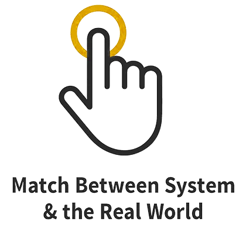
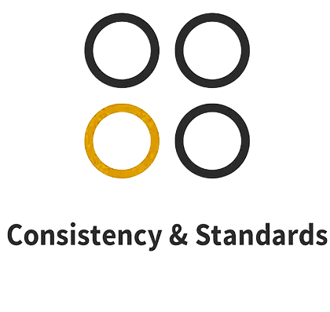
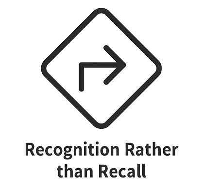
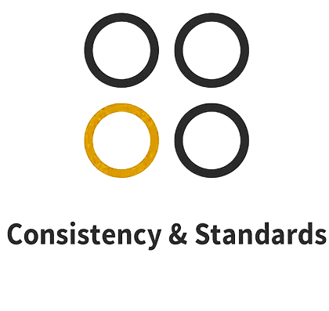
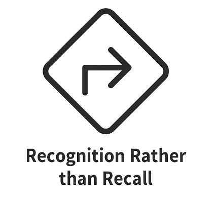
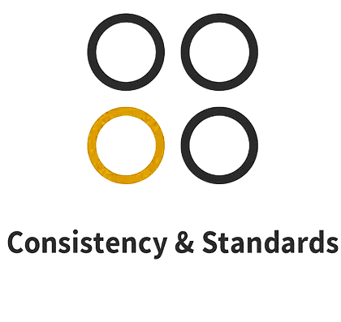
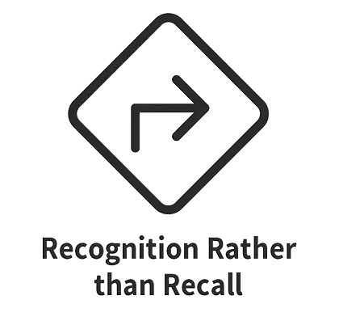

Usability Heuristics
Can Nielsen’s 10 heuristics detect
modern usability issues?
Hamed Jalali, Stephanie ludi, Pranshu Bhardwaj
University of North Texas
University of North Texas
Introduction
This study examines the application of Jakob Nielsen's
heuristics in current software development scenarios by analyzing
posts from Stack Overflow. It aims to determine the relevance of
these time-tested heuristics in identifying and addressing the
variety of usability issues developers face in today's
fast-paced tech environment. Through a comprehensive review of
data spanning from September 2008 to November 2022, the research
investigates the real-world challenges in software usability as
they are expressed in the most extensive developer community. The
insights gained from this analysis seek to establish a substantial
connection between Nielsen's theoretical framework and the
practical experiences of software developers, underscoring the
ongoing value of heuristic evaluation in the evolution of
user-centered software design.
Background
10 Jakob Nielsen's Usability heuristics
 


Study Design

Results
This empirical study examined a substantial number of discussions
on Stack Overflow, specifically aligning them with Jakob
Nielsen's usability heuristics. The study revealed a
meaningful alignment of usability-related issues within software
development discussions with these heuristics. Significantly, the
heuristics concerning flexibility and efficiency of use surfaced
most prominently, highlighting their essential role in addressing
usability challenges in current development contexts. This
correlation emphasizes Nielsen's sustained applicability as a
tool for analyzing usability challenges and their integration into
software development discussions.


Conclusion
The study presents Nielsen's heuristics as more than
theoretical constructs; they are practical tools embedded within
the discussion of developers dealing with usability issues. Our
analysis of Stack Overflow posts offers a window into the
practical challenges and considerations that pervade today's
software development, demonstrating a solid connection between
these time-tested heuristics and the lived experiences of
developers. As technology progresses, the adaptability of
heuristics will continue to be pivotal in guiding the creation of
user-centric software interfaces.